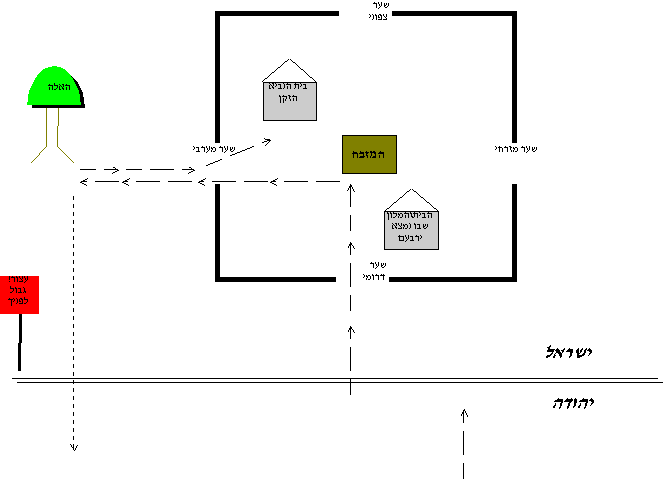

קוד: ביאור:מלכים א יג16 בתנ"ך
סוג: מניעים1
מאת: סיגל ואראל
אל: מכתב
ירבעם מלך ישראל עלה על המזבח אשר עשה בבית-אל והתחיל להקטיר. איש א-להים נשלח מיהודה כדי להוכיח אותו. לאחר שידו של ירבעם יבשה והמזבח נקרע, ירבעם פנה אל איש הא-להים והציע לו (מלכים א יג7): "בואה איתי הביתה וסעדה; ואתנה לך מתת
". אך הנביא סירב וענה לו: "אם תיתן לי את חצי ביתך לא אבוא עימך, ולא אוכל לחם ולא אשתה מים במקום הזה. כי כן ציווה אותי בדבר ה' לאמור: לא תאכל לחם, ולא תשתה מים,
ולא תשוב בדרך אשר הלכת
". ואכן: "וילך בדרך אחר; ולא שב בדרך אשר בא בה אל בית אל
".
לאחר מכן השיג אותו נביא שומרוני זקן, וגם הוא הציע לו (מלכים א יג15): "לך איתי הביתה, ואכול לחם!
" אך איש הא-להים שוב סירב ואמר: "לא אוכל לשוב איתך ולבוא איתך, ולא אוכל לחם, ולא אשתה איתך מים, במקום הזה. כי דבר אליי בדבר ה': 'לא תאכל לחם, ולא תשתה שם מים,
לא תשוב ללכת בדרך אשר הלכת בה.
"
שאלות (ע"פ סיגל):
נראה לי שגם הנביא הזקן וגם ירבעם גרו בבית-אל. על הנביא הזקן נאמר בפירוש בהתחלה: "ונביא אחד זקן
יושב בבית-אל
" (יג 11) ובסוף: "ויבואו וידברו בעיר אשר הנביא הזקן
יושב בה
" (כנראה בית-אל) – מכאן נראה שהוא ישב בבית-אל לאורך כל הסיפור. על ירבעם זה לא כתוב בפירוש אבל אפשר להניח שלמלך היה איפה לגור בבית-אל – גם בימינו כשאדם חשוב נוסע לעיר רחוקה הוא לא חוזר מיד הביתה אלא מתאכסן שם במלון מפואר. לפי זה אפשר להסביר הכל ע"י ציור מפה אפשרית של בית-אל:

הסבר: איש הא-להים בא מהדרום אל המזבח, בדרך הוא עבר ליד הבית\המלון שבו התאכסן ירבעם (ולכן לא יכל לחזור לשם), ואז פנה מערבה כדי לחזור ליהודה בדרך אחרת (הקו עם החץ למטה), אבל הנביא הזקן השיב אותו אל ביתו שהיה בתוך העיר.
אם ירבעם גר בתרצה -- ייתכן שאיש הא-להים אכן היה רשאי לבוא אתו אל ביתו. אבל מכיוון שכל מטרתו של ירבעם בהזמנה היתה לארח אותו ולתת לו לאכול (ולאכול בכל-מקרה אסור לו) - הוא חשב שאין טעם שיבוא אליו.
אולי הוא חשש שאם יסרב - אשתו של ירבעם תיפגע ותגיד 'למה אתה לא רוצה לאכול את האוכל שהכנתי? הכשרות שלי לא מספיק טובה בשבילך?!'...
ואולי הוא ידע שהדרך עד תרצה ארוכה, ובדרך הוא יאבד נוזלים ויאלץ לשתות, בניגוד למה שאמר לו ה' "לא תשתה מים
".
נשאל עוד שאלה: איך השומרים בבית-אל נתנו לאיש הא-להים להיכנס? הרי היחסים בין יהודה לישראל לא היו אז כל-כך טובים – איך הם לא חששו שהוא מרגל? יש כמה תשובות אפשריות:
האיסור לחזור אחורה אינו סתם איסור טכני -
הוא מבטא חרם וניתוק מבית-אל וממלכות עשרת השבטים. לכן, גם אם מבחינה טכנית היה מותר לאיש-האלהים לבוא עם ירבעם, מבחינה עקרונית ברור שהוא צריך להתנתק ממנו באופן מיידי, ולא ליצור איתו קשר של אירוח.